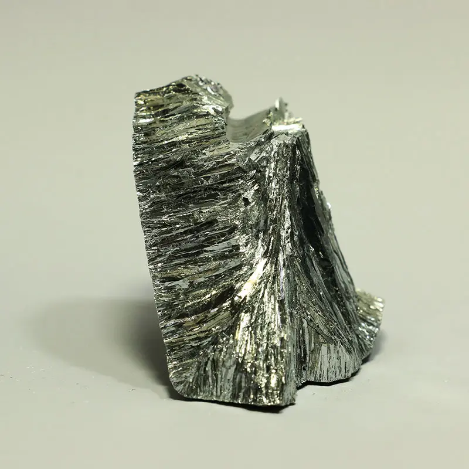

Гольмий

Го́льмий (химический символ — Ho, от лат. Holmium) — химический элемент 3-й группы (по устаревшей классификации — побочной подгруппы третьей группы, IIIB) шестого периода периодической системы химических элементов Д. И. Менделеева, с атомным номером 67.Относится к семейству лантаноидов. Простое вещество гольмий — это пластичный редкоземельный металл серебристо-белого цвета.
В 1879 году швейцарский химик и физик Жак-Луи Соре методом спектрального анализа обнаружил в «эрбиевой земле» новый элемент.Название элементу дал шведский химик П. Т. Клеве в честь Стокгольма (его старинное латинское название Holmia), так как минерал, из которого сам Клёве в 1879 году выделил оксид нового элемента, был найден близ столицы Швеции.
Гольмий – серебристо-серый металл, до 1428 °C устойчива модификация с гексагональной решёткой, tпл 1461 °C, tкип 2720 °C, плотность 8795 кг/м3. Конфигурация внешних электронных оболочек атома 4f115s2p66s2. Ферромагнетик, точка Кюри 19,4 К. В соединениях проявляет степень окисления +3. Металлический гольмий медленно окисляется на воздухе. Гольмий получают при переработке руд, содержащих редкоземельные элементы. Гольмий – компонент магнитных сплавов, соединения гольмия входят в состав некоторых люминофоров.